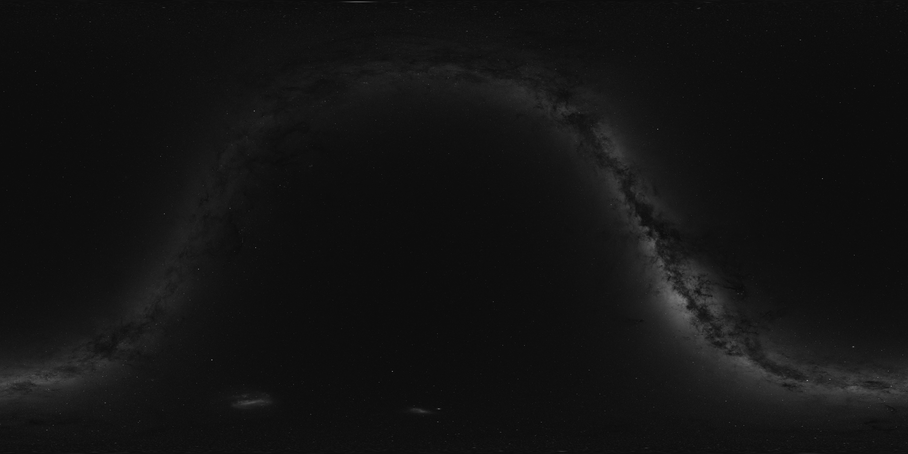
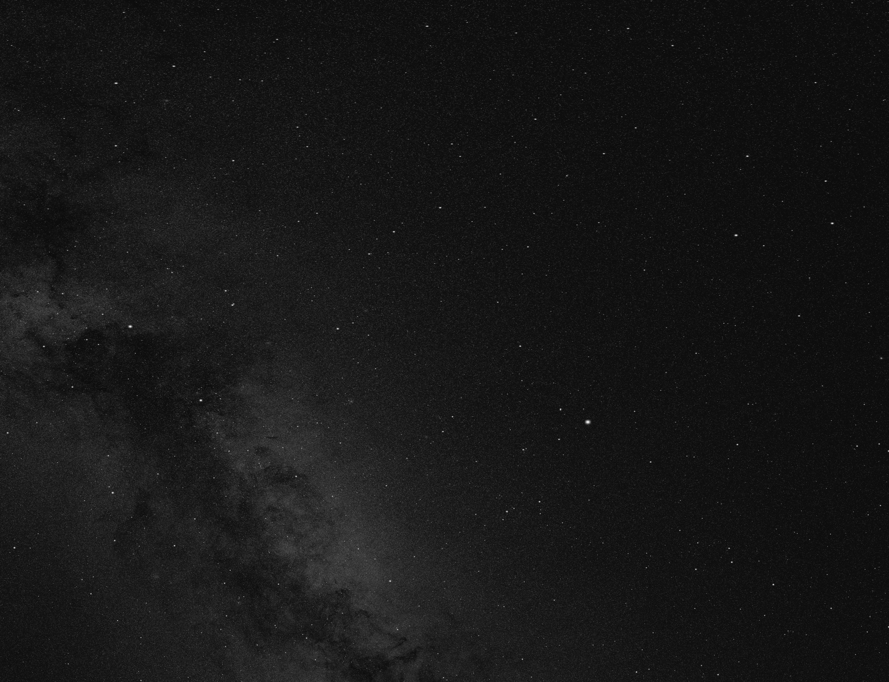

Drag or use the arrow keys to move. Scroll, pinch, or use plus and minus to zoom. Select a host star on the chart or in the index to inspect its planets. The two sky diagrams change the view. Home restores the Kepler field.

